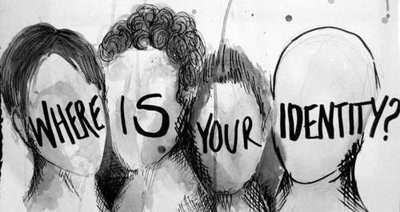
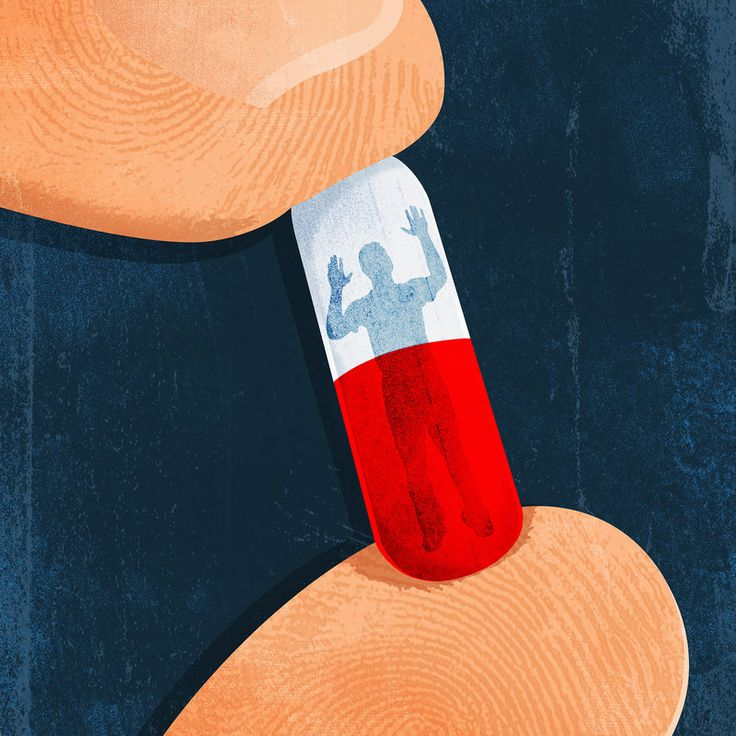

Advantages and Disadvantages of Pornography
Masturbation, a natural and normal part of human sexuality, has long been shrouded in controversy and stigma. While some view it as a harmless and healthy activity, others consider it taboo or even detrimental to ones well-being. Masturbation is a complex and multifaceted aspect of human sexuality. While it offers several benefits, excessive or compulsive masturbation can have negative consequences.
Masturbation is the deliberate stimulation of ons own genitals, typically to achieve sexual pleasure, arousal, or orgasm. This natural and normal aspect of human sexuality is practiced by individuals of all ages, genders, and sexual orientations (Planned Parenthood, 2022). According to the American Sexual Health Association (ASHA), masturbation is a common and healthy part of human sexuality, serving as a means of self-exploration, relaxation, and sexual expression (ASHA, 2022).
Although it may be healthy, too much can truly harm. Excessive masturbation can have negative consequences, including addiction (Psychology Today, 2018), genital irritation, injury or pain (Mayo Clinic, 2022), and desensitization (Healthline, 2020). It can exacerbate mental health conditions like depression, anxiety, and obsessive-compulsive disorder (Harvard Health Publishing, 2019), and cause feelings of guilt, shame, and low self-esteem (Journal of Sex Research, 2017). Excessive masturbation can also strain intimate relationships (The Guardian, 2019), highlighting the importance of balance, communication and mutual respect.
Pornography can serve as a catalyst for Gender Exploration, particularly among individuals questioning their sexual orientation or gender identity. According to Dr. Katherine Hertlein, a sex therapist, pornography provides a safe space for individuals to explore their desires without fear of judgment or rejection (Hertlein, 2017). This anonymous exploration can facilitate self-discovery, helping individuals better understand their sexual preferences and identity.
Pornography exposes viewers to diverse gender expressions, sexual orientations and relationship dynamics. This exposure can broaden one's understanding of gender and sexuality, challenging traditional norms and fostering empathy (Barker, 2013). For instance, watching porn featuring non-binary or transgender individuals can help viewers appreciate the complexity of gender identity.
While pornography has its limitations and potential drawbacks, its role in gender exploration cannot be ignored. By providing access to diverse representations of sexuality and gender, pornography can empower individuals to explore their own identities and desires. However, it's essential to approach pornography critically, recognizing its potential biases and limitations.
Pornography can have surprising Health Benefits. A 2020 study published in the Journal of Sex Research found that moderate pornography consumption can reduce stress levels and improve mood (Grubbs et al., 2020). This stress relief can translate to physical health benefits, such as lower blood pressure and a healthier cardiovascular system.
Pornography can promote sexual wellness by providing education and inspiration. Sex therapist Dr. Justin Lehmiller notes that pornography can help individuals explore their desires and communicate them to their partners (Lehmiller, 2021). This increased communication can lead to improved sexual satisfaction and intimacy.
Moderate consumption, defined as 1-2 hours weekly, can maximize benefits while minimizing risks (Kohut et al., 2022). By recognizing pornography's potential benefits, individuals can make informed decisions about their sexual health.
